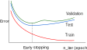
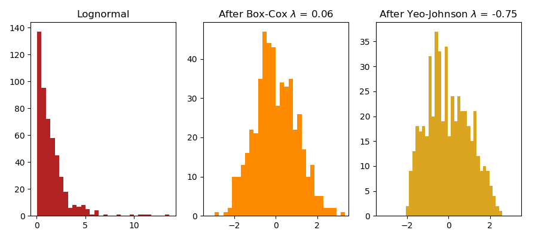
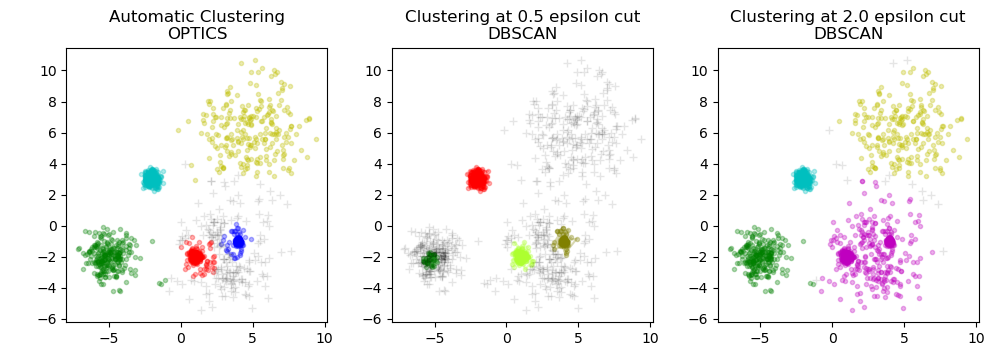

class: center, middle # scikit-learn new features ## Tutorial Roman Yurchak *<span style="white-space: nowrap">May 28, 2019</span>* <div style="height:30px"></div> .pull-left[ <img src="img/logo_INRIA_FR.svg" style="width: 65%;" /> ] .pull-right[ <div style="height:15px"></div> <img src="img/scikit-learn-logo.png" style="width: 50%;" /> ] --- # Agenda <div style="height:35px"></div> 1. Overview of new features in v0.20, v0.21 2. Tutorial: application examples --- # Latest scikit-learn releases .pull-right[ <img src="img/scikit-learn-logo.png" style="width: 50%;" /> <div style="margin-top:-150px"></div> ] **Version 0.20** *Sept 26, 2018* - 13 months work - 361 contributors - 1130 commits, 63 new features <small>(excl. bug fixes & enhancements)</small> -- **Version 0.21** *May 10, 2019* - 8 months work - 221 contributors - 795 commits, 24 new features <small>(excl. bug fixes & enhancements)</small> [scikit-learn.org/stable/whats_new.html](https://scikit-learn.org/stable/whats_new.html) --- # ColumnTransformer <div style="margin-top:-40px"></div> ## sklearn.compose Allows to apply different transformers to different columns of arrays or pandas DataFrames: **Example** ```py from sklearn.compose import ColumnTransformer from sklearn.feature_extraction.text import CountVectorizer from sklearn.preprocessing import OneHotEncoder X = pd.DataFrame({'city': ['Paris', 'London'], 'title': ['His Last Bow', 'A Moveable Feast'], 'user_rating': [4, 5, 4, 3]}) column_trans = ColumnTransformer( [('city_category', OneHotEncoder(dtype='int'),['city']), ('title_bow', CountVectorizer(), 'title')], remainder='drop') column_trans.fit(X) ``` <div style="margin-top:-10px"></div> <small>*Added in v0.20 by Andreas Müller, Joris Van den Bossche, Thomas Fan.*</small> --- # OpenML fetcher <div style="margin-top:-40px"></div> .pull-right[ <div style="margin-top: 200px"></div> <div style="margin-top: -200px"></div> ] ## sklearn.datasets Added a fetcher for OpenML, a free, open data sharing platform - ~20000 datasets available at [www.openml.org](https://www.openml.org/) **Example** ```py >>> from sklearn.datasets import fetch_openml >>> iris = fetch_openml('iris') >>> iris['data'].shape (150, 4) >>> iris['feature_names'] ['sepallength', 'sepalwidth', 'petallength', 'petalwidth'] ``` <small>*Added in v0.20 by Andreas Müller and Jan N. van Rijn.*</small> --- # Early stopping in models Stop training earlier when the validation score no longer improves. .center[  ] Supported in SDGClassifier, MLPClassifier, HistGradientBoostingClassifier <small>(and corresponding regressors)</small> ```py from sklearn.linear_model import SDGClassifier SGDClassifier(early_stopping=True, n_iter_no_change=3, tol=0.0001, validation_fraction=0.2) ``` <div style="margin-top:-20px"></div> <small>*Added in v0.20 by Tom Dupre la Tour.*</small> --- # PowerTransformer <div style="margin-top:-40px"></div> ## sklearn.preprocessing Implements Yeo-Johnson and Box-Cox power transformations, that apply a power transform featurewise to make data more Gaussian-like. .center[  ] Also see: QuantileTransform. <div style="margin-top:-10px"></div> <small>*Added in v0.20 by Eric Chang, Maniteja Nandana, Nicolas Hug.*</small> --- # IterativeImputer <div style="margin-top:-40px"></div> ## sklearn.impute Imputing missing values by modeling each feature with missing values as a function of other features in a round-robin fashion. **Experimental** ```py >>> import numpy as np >>> from sklearn.experimental import enable_iterative_imputer >>> from sklearn.impute import IterativeImputer >>> imp = IterativeImputer(max_iter=10, random_state=0) >>> imp.fit([[1, 2], [3, 6], [4, 8], [np.nan, 3], [7, np.nan]]) >>> X_test = [[np.nan, 2], [6, np.nan], [np.nan, 6]] >>> # the model learns that the second feature is double the first >>> print(np.round(imp.transform(X_test))) [[ 1. 2.] [ 6. 12.] [ 3. 6.]] ``` <div style="margin-top:-10px"></div> <small>*Added in v0.21 by Sergey Feldman and Ben Lawson.*</small> <div style="margin-top:-15px"></div> **Note**: NaN are ignored and handled in pre-processors as of v0.20. --- # OPTICS <div style="margin-top:-40px"></div> ## sklearn.cluster A new clustering algorithm related to DBSCAN, that has hyperparameters easier to set and that scales better .center[  ] <small>*Added in v0.21 by Shane, Adrin Jalali, Erich Schubert, Hanmin Qin, Assia Benbihi.*</small> --- ## Histogram-based Gradient Boosting Trees Gradient boosting trees inspired by LightGBM, significantly faster than `GradientBoostingClassifier` / `GradientBoostingRegressor` **Experimental** ```py >>> # explicitly require this experimental feature >>> from sklearn.experimental import enable_hist_gradient_boosting # noqa >>> from sklearn.ensemble import HistGradientBoostingClassifier ``` <small>*Added in v0.21 by Nicolas Hug and Olivier Grisel.*</small> --- ## NeighborhoodComponentsAnalysis <div style="margin-top:-40px"></div> ## sklearn.neighbors <div style="margin-top:-10px"></div> A metric learning algorithm that learns a linear transformation to improve the classification accuracy in the transformed space. ```python from sklearn.neighbors.nca import NeighborhoodComponentsAnalysis from sklearn.neighbors import KNeighborsClassifier from sklearn.datasets import load_iris from sklearn.model_selection import train_test_split from sklearn.pipeline import make_pipeline X, y = load_iris(return_X_y=True) X_train, X_test, y_train, y_test = train_test_split(X, y, stratify=y, test_size=0.7, random_state=42) knn = KNeighborsClassifier(n_neighbors=3) knn.fit(X_train, y_train) nca = make_pipeline(NeighborhoodComponentsAnalysis(random_state=42), KNeighborsClassifier()) nca.fit(X_train, y_train) print(knn.score(X_test, y_test)) # 0.93 print(nca.score(X_test, y_test)) # 0.96 ``` <div style="margin-top:-20px"></div> <small>*Added in v0.21 by William de Vazelhes.*</small> --- # Decision trees visualization - Decision trees can be plotted with matplotlib without needing to install graphviz (`tree.plot_tree`) - ASCII representation also available (`tree.export_text`) ```py >>> from sklearn.datasets import load_iris >>> from sklearn.tree import DecisionTreeClassifier >>> from sklearn.tree.export import export_text >>> iris = load_iris() >>> X = iris['data'] >>> y = iris['target'] >>> decision_tree = DecisionTreeClassifier(random_state=0, max_depth=2) >>> decision_tree = decision_tree.fit(X, y) >>> r = export_text(decision_tree, feature_names=iris['feature_names']) >>> print(r) |--- petal width (cm) <= 0.80 | |--- class: 0 |--- petal width (cm) > 0.80 | |--- petal width (cm) <= 1.75 | | |--- class: 1 | |--- petal width (cm) > 1.75 | | |--- class: 2 ... ``` <div style="margin-top:-20px"></div> <small>*Added in v0.21 by Andreas Müller and Giuseppe Vettigli.*</small> --- # Estimator tags - programmatic inspection of estimator capabilities (e.g. sparse or multilabel support) - also determine the tests that are run by `check_estimator` Useful when developing libraries that aim to comply with the scikit-learn API. **Experimental** ```py class MyMultiOutputEstimator(BaseEstimator): def _more_tags(self): return {'multioutput_only': True, 'non_deterministic': True} ``` <small>*Added in v0.21 by Andreas Müller.*</small> --- # Tutorial Requires - scikit-learn 0.21.2 - pandas - matplotlib Tutorial notebook: [github.com/glemaitre/scikit-learn-workshop-2019](https://github.com/glemaitre/scikit-learn-workshop-2019)